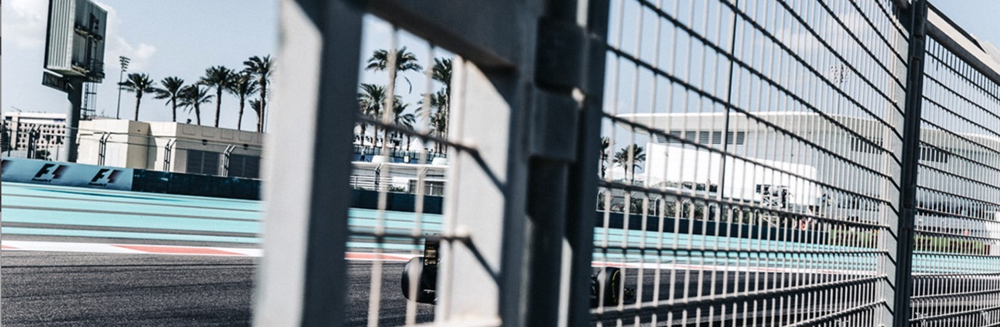
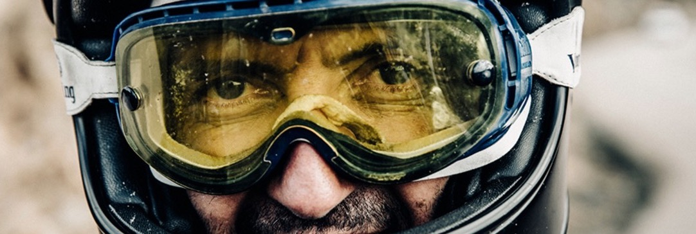

人类在与自然的融合过程中，借助于现代高科技手段，最大限度地发挥自我身心潜能，向自身挑战的娱乐体育运动。它除了追求竞技体育超越自我生理极限“更高、更快、更强”的精神外，更强调参与、娱乐和勇敢精神，追求在跨越心理障碍时所获得的愉悦感和成就感，同时，它还体现了人类返璞归真、回归自然、保护环境的美好愿望，因此已被世界各国誉为“未来体育运动”。极限运动本身也有广义和狭义之分。一些挑战性高的非奥运非世界运动会项目广义上都可以叫做极限运动，比如蹦极、攀岩、悬崖跳水等等。

但是狭义的极限运动单指各个大型极限运动会中包含的成型的项目，比如极限摩托车、极限轮滑等等，由于运动会中的这些极限运动经过长时间的系统发展已经有了规模，组织严密，规则完善，比赛合理，因此很多项目正逐渐被大型综合性运动会吸收，比如小轮车竞速已经成为奥运项目，

滑雪板U型池也是正式的冬奥项目。那么这些极限项目的出身简单来说就是两种，一种是由一项成型运动演变来的，比如极限摩托车就是由motocross分化出来的，极限滑雪是从普通的滑雪演变来的等等。